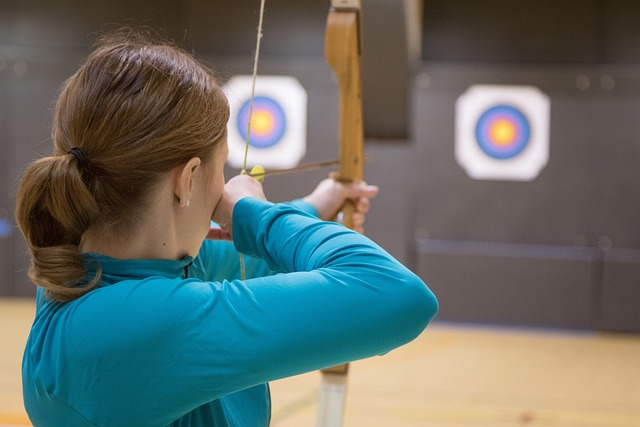
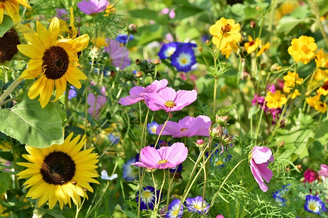

Tucaryds pilbågsskytte
Som hobbyskytt börjar väldigt många hemma i trädgården, eller på landet. Det är en fantastisk möjlighet vi har i Sverige som gör att vi får göra det. Vi måste värna om detta, så om du är en hobbyskytt som skjuter hemma, gå med i Tucaryds pilbågskytte!
Något som växer allt mer och mer i Sverige är bågskyttet som rehabilitering, bågskyttet kan användas i avslappningssyfte och koncentrationsövning om det används rätt. Kontakta oss så kan vi försöka hjälpa dig att komma i kontakt med instruktörer för detta.
Tucaryds pilbågsskytte → Tucaryds FotoKlubb
Vi är drygt 100 medlemmar och vi vill gärna bli fler! Du är välkommen som gäst på ett månadsmöten för att själv se och uppleva vår breda verksamhet inom fotografi.
På våra möten får vi besök av duk-tiga fotografer som visar fanta-stiska bilder. Ofta tillsammans med goda råd för att vi ska kunna utveckla vårt eget fotograferande.
Några av våra medlemmar tävlar i klubb- och distriktstävlingar samt även i både nationella- och inter-nationella tävlingar.
Vi bedriver egen kursverksamhet och två gånger per år gör vi fotoutflykter tillsammans. Verksamheten präglas av att vi delar med oss av vår erfar-enhet och kunskap till varandra.
Tucaryds FotoKlubb →
Tucaryds Botaniklubb
Välkommen till oss i Botaniska Sällskapet!
Under sommarhalvåret ordnar vi botaniska utflykter till intressanta platser främst i våra egna trakter, men även lite längre bort. Erfarna botanister delar med sig av sin kunskap.
Under vintern träffas vi inomhus och lyssnar på föredrag av kunniga botanister från när och fjärran.
Ett botanikintresse kan börja med upplevelsen att blommor är vackra. När kunskapen ökar, finns det massvis av områden att upptäcka. Någon blir maskrosexpert, någon tycker att daggkåpor eller fibblor är det mest intressanta, någon älskar halvgräs eller soptippsväxter (alt. ruderatväxter).
Du behöver absolut inte kunna allt om botanik för att följa med på våra utflykter eller gå med i vår förening.
Tucaryds Botaniklubb → Hittar du inte det du söker?
Vi är många föreningar och verksamheter i Tucaryds kommun.
Klicka nedan för att komma till en fullständig katalog av alla verksamheter.
Vill du skapa en egen verksamhet eller förening?
Starta egen verksamhet →